The first thing you need to learn is how to first start your code. Before starting out each page you copy and paste a template into a blank JS page. Then you need to link the JS page into a seperate html page, this way you can see what you are coding.
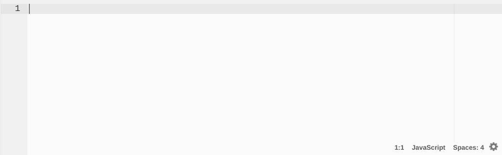 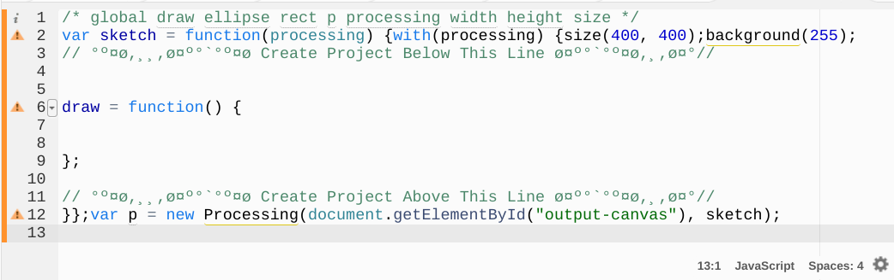After you have copy and pasted the template into the JS file, you then have to link the JS file into an HTML file. In this case, my JS file is titled "test" so I would insert "test.js" into my HTMl page.
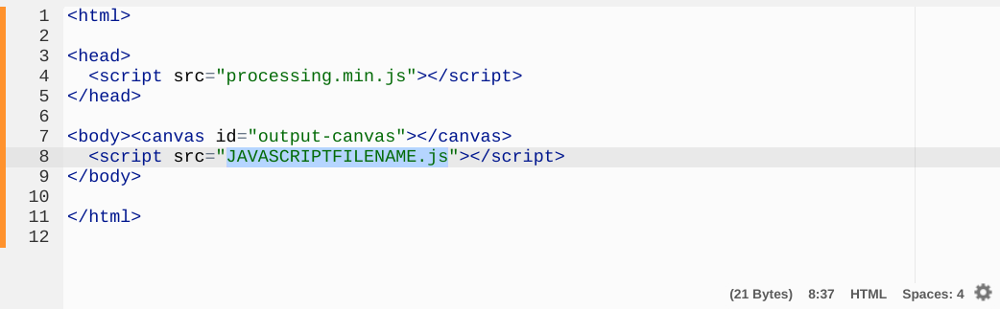 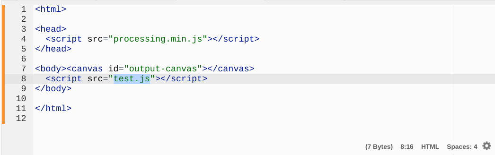One of the basics in JS is to find out
how to create shapes. The two main shapes that you will be using are rectangles
and ellipses (circles and other round shapes).
In order to create a rectangle you need to start by using a "rect" function.
You create a rect function by setting the coordinates and size of the object.
The concept is the same with the ellipse, the only difference is that this object will be round instead of square.
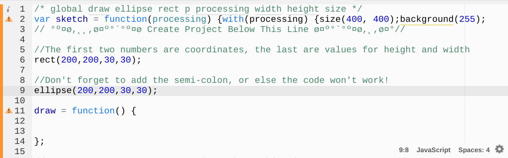 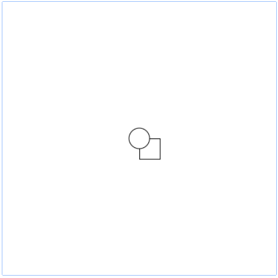Something to remember is that with the rectangle,
the coordinates set the start of the top left corner, while with ellipses, the
coordinate determines the center.
The JS code reads the text from top down, so based on the code, the ellipse is layered
over the rectanlge, but if you swap them then the rectangle will overlap the circle.
In order to add color into the shapes, you must use the fill code. This code is read from top to bottom, this means that you have to add the fill code above the shape you want to color. The code uses RGB ratios to code, this means that if you want the color to be white you use fill(255,255,255); but if you want it to be black you would used fill(0,0,0);.
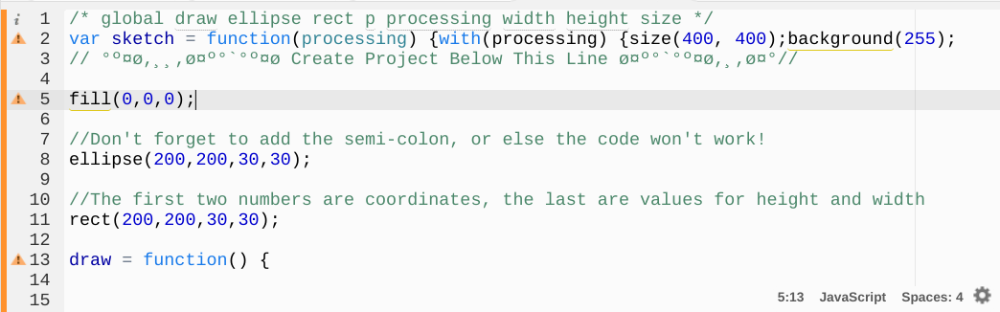 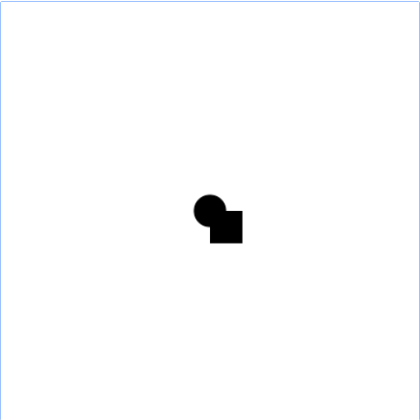In order to code the background color you would need to use the code background(0,0,0); or whatever combination of rgb you need to make the color you want. In this case its dark yellow:
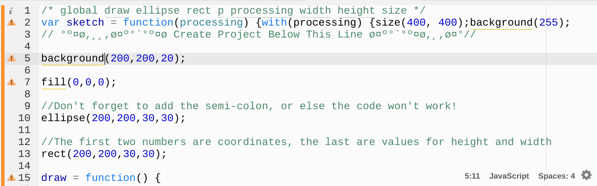 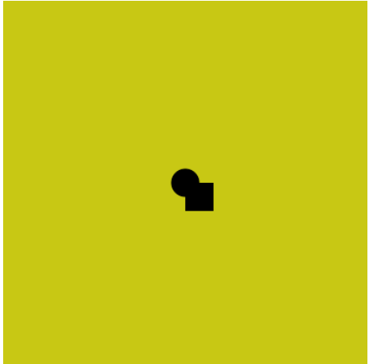Before you create an animation you need to create a variable that tells the code where to move. This can be done by using the var fucntion. By using a variable instead of a number, you isert the keyword for the variable into multiple functions in order to change all of the numbers at once instead of individually.
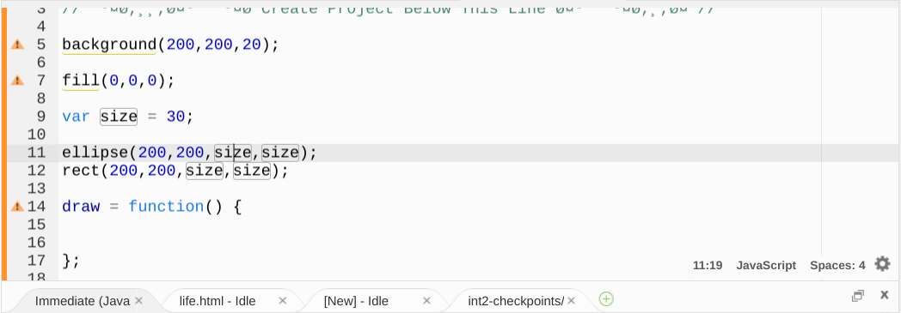 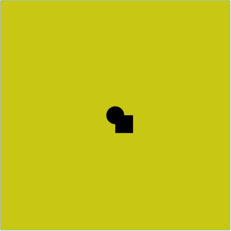 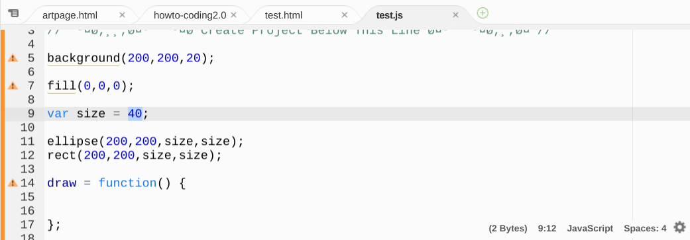 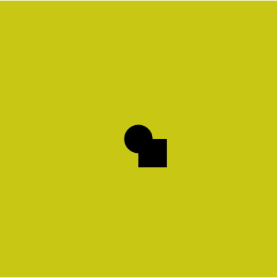Animation works a lot of different ways, in this case I will use a draw function. This is a function that repeatedly creates shapes that you put into the draw function. The way you do this is by copying and pasting the shapes into the draw function but not the variable function. Next thing you do is add the animation part to the function. This is hard to explain but I'll try. What you need to do is use the variable, in this case its "size" and make it equal to itself "size = size" but then add a number to make it animate "size = size + 1".
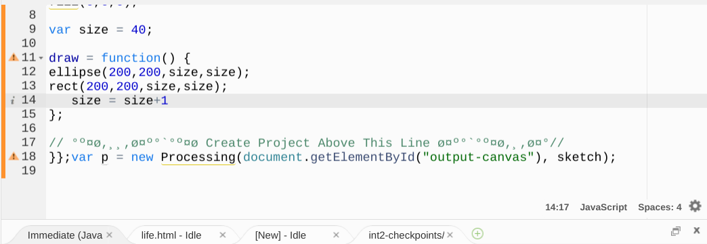 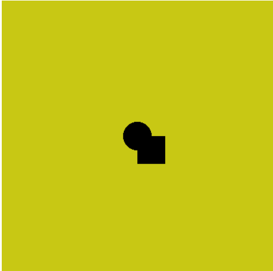 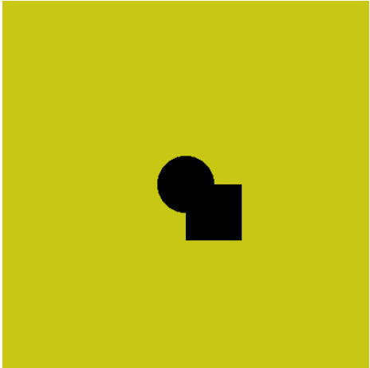 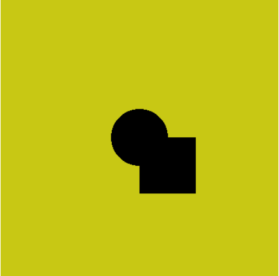In this case it grows by increments of 1. By changing the + 1 to a higher number, you can vary the speed at which the shape(s) grows.
My art page has lines that are continuously animating in the background, and when you move the mouse a circle with a pattern on it follows the mouse.
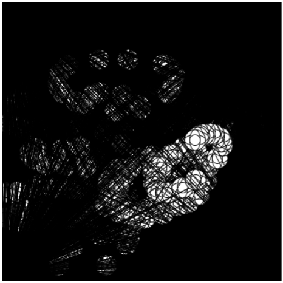This works by using the draw function. I inserted 4 different functions, each function produces 3 lines that spawn from the corners of the page to random spots. I labeled these functions as "lineFunction1-4" then I created an ellipse function and added that into the draw function as well. This means that lines are continuously being created in the background, this creats an artificial background. While there is an actually backgound it gets covered up by the lines: blackening it. As you can see there are also circles that show up wherever the mouse is. This is accomplished through an ellipse function using the mouse coordinates. However, I also have to insert the ellipse into the draw function. If I didn't insert the ellipse into the function there would only be one static ellipse that follows your mouse, but if you put into the draw function, then there will be a trail of circles that follow your mouse and this is what I wanted in my art page.
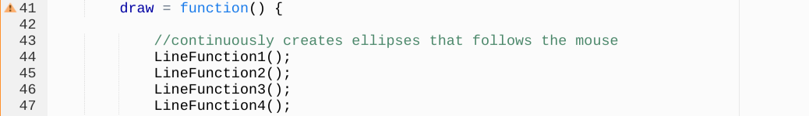 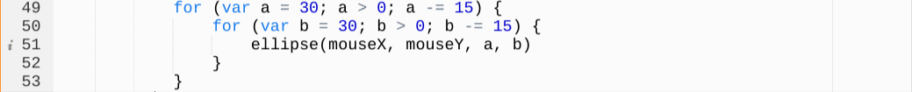MouseX is equivilant to where the mouse is
on the x-axis, and MouseY is where the mouse is on the y-axis.
Something that you may notice is that there is a "for" function. This is what you
call a "for loop". This is what creates the pattern on my circle, a and b are
variables for the size of my circle. I created a loop that continuously changes
the size of the circle. First a vertically elongated circle with a width of 15
and height of 30, and another with the width of 30 and height of 15 as well as two
circles, one with a height and width of 30 and another with 15. This creates all
these circles at once which creates an interesting pattern on my circle that
matches well with the background and adds complexity to the piece.
Another thing that I added into my code is that when you click on the corners of the screen the loop restarts and the background changes color. Top left is red, top right is green, bottom left is blue, and the bottom right is yellow. I added this because the art piece was lacking color and was very black and white. I wanted to add more 'life' to the piece and adding color was the best way to do this.
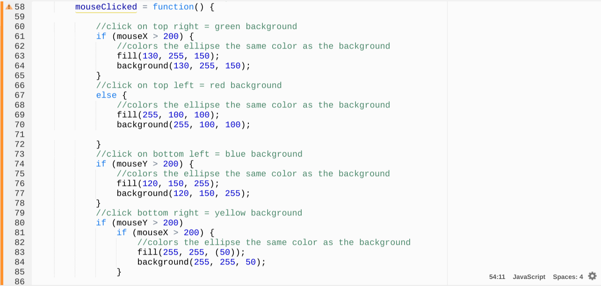In this section of code, if the mouse is on the left side of the screen and on the top half (or the top left corner) then when you click the background will turn red. This uses an "if" statement, using the top/bottom half and left/right half of the screen to determine what quadrant your mouse is on. The "if" statements also change the color of the circles from white to the color of the background by using a fill function. Because this is in a mouseClicked function, whenever you clicked then the if functions would kick in. This added a user interaction into the piece and increased the complexity while also doubling as a reset to the art page.
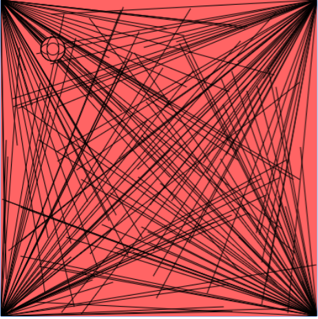 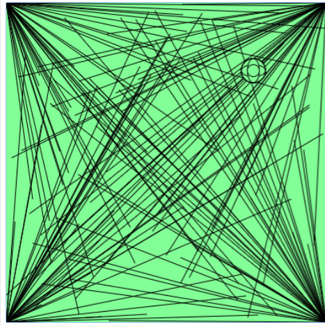 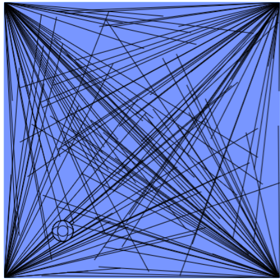 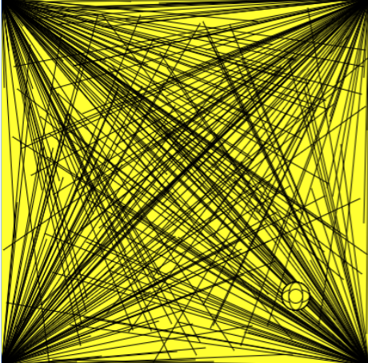Some of the choices I made were what colors I should use for my project. Originally I wanted to make the lines white, but I didn't know how to, so instead I left it black. The next choice I had to make was what colors I should use for the corners. I decided to use the windows logo colors for my art page. This is because the windows logo was fitting for an art page on the computer since Windows only had 4 colors in the logo and it added an 'inside joke' for those who noticed the logo.